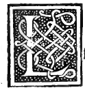

CHAPTER L¶
On the Disposition of the Octocedron: Regular (Plates XIII–XIV), Truncated (Plates XV–XVI), and Elevated (Plates XVII–XVIII).

Next we describe the third regular body, the octocedron of eight equilateral triangular bases, together with its truncated (absciso) and elevated (elevato) dependent bodies in solid and hollow perspective (Plates XIII–XVIII).
1. The Regular Octocedron — Solid (Plate XIII) and Hollow (Plate XIV)
Plate XIII (Folio 0217, Octocedron Planum Solidu[m]) and Plate XIV (Folio 0219, Octocedron Planum Vacuum): This is the third regular body, whose construction in the sphere we demonstrated in Chapter XXVIII ([XIII.14]). It has 8 equilateral triangular bases, 6 solid angles (each contained by 4 plane angles of \(\frac{2}{3}R\)), and 12 equal edges.
2. The Truncated Octahedron (Octocedron Abscisum) — Solid (Plate XV) and Hollow (Plate XVI)
Plate XV (Folio 0221, Octocedron Abscisum Solidu[m]) and Plate XVI (Folio 0223, Octocedron Abscisum Vacuum): This dependent body is formed from the regular octocedron:
Note carefully the two ways of truncating the octocedron:
If the 12 edges of the octocedron are divided into three equal parts (\(\frac{1}{3}, \frac{1}{3}, \frac{1}{3}\)) and the 6 four-faced solid angles are sliced off at those trisection points, then the 6 cut-off vertices become 6 squares (because 4 triangles meet at each vertex of the octocedron) and the 8 original triangular faces become 8 regular hexagons, producing a body of 14 faces (6 squares and 8 hexagons), 24 vertices, and 36 equal edges.
If instead the cut is made at the midpoints (\(\frac{1}{2}\)) of the 12 edges of the octocedron, the 6 cut-off vertices become 6 squares and the 8 original triangles are reduced to 8 equilateral triangles, yielding the exact same 14-base body of 6 squares and 8 triangles (the cuboctahedron) that was generated from the cube in Plates IX–X! (In Leonardo’s Plates XV and XVI, the rectified 14-face cuboctahedron is drawn again from the dual octahedral perspective.)
3. The Elevated Octahedron (Octocedron Elevatum / Stella Octangula) — Solid (Plate XVII) and Hollow (Plate XVIII)
Plate XVII (Folio 0225, Octocedron Elevatum Solidu[m]) and Plate XVIII (Folio 0227, Octocedron Elevatum Vacuum): This body is formed by erecting upon each of the 8 equilateral triangular bases of the core octocedron an equilateral triangular pyramid (a small tetracedron):
Externally it is bounded by \(8 \times 3 =\) 24 equilateral triangular faces (while the 8 triangular bases of the core octocedron lie within).
It has 14 vertices in all (6 interior re-entrant vertices of the core octocedron and 8 exterior projecting cones of the eight elevated pyramids—which 8 exterior cones stand at the 8 corners of a circumscribing cube!) and 36 equal edges (the 12 edges of the core octocedron plus \(8 \times 3 = 24\) rising edges).